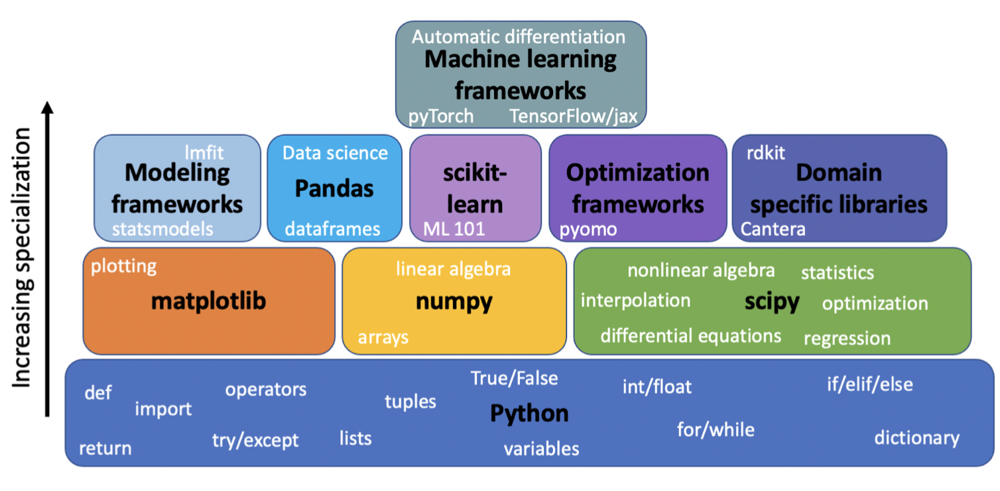

Resources#
There is a vibrant community of machine learning developers and open source packages for scientific research. Many of the links below have provided inspiration or borrowed content for this course.
 (Image by John Kitchen)
General Python#
Tools and Benchmarks#
Classical ML: scikit-learn
Deep Learning: pytorch; keras; tensorflow
Materials benchmarks: Matbench; Matbench-Discovery; JARVIS-Leaderboard
Molecular focused tools: deepchem; stk; chemiscope
Advanced: mlflow; shap analysis; automatminer
Other lists: Awesome Materials Informatics; Awesome Self Driving Labs; Atomistic ML